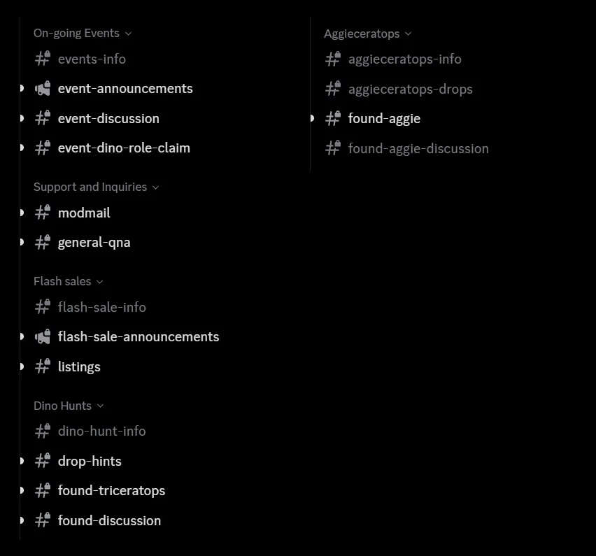
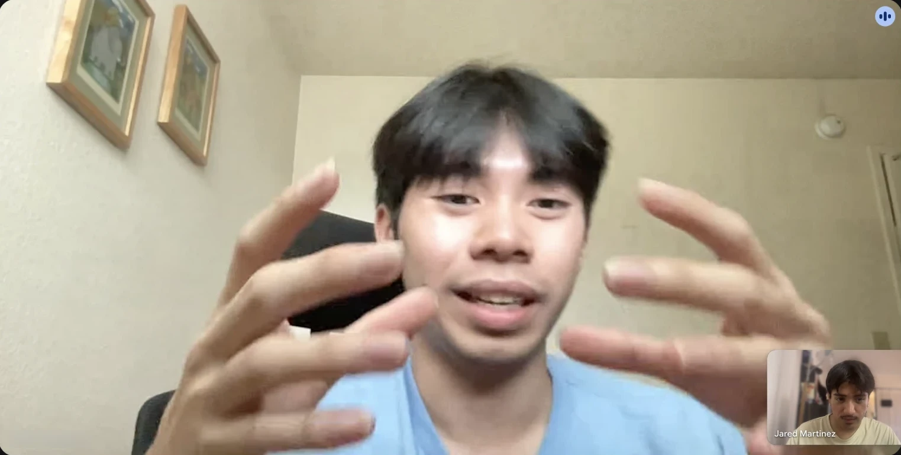
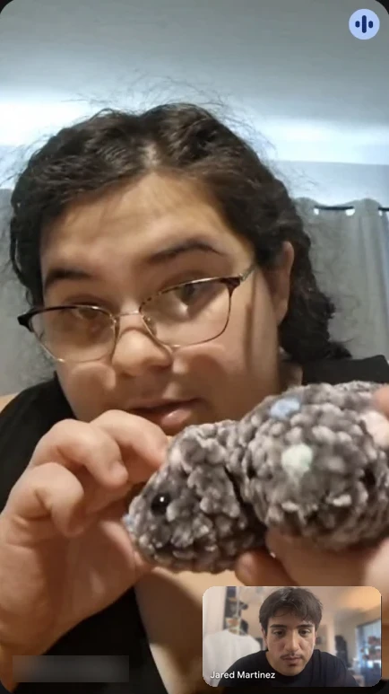
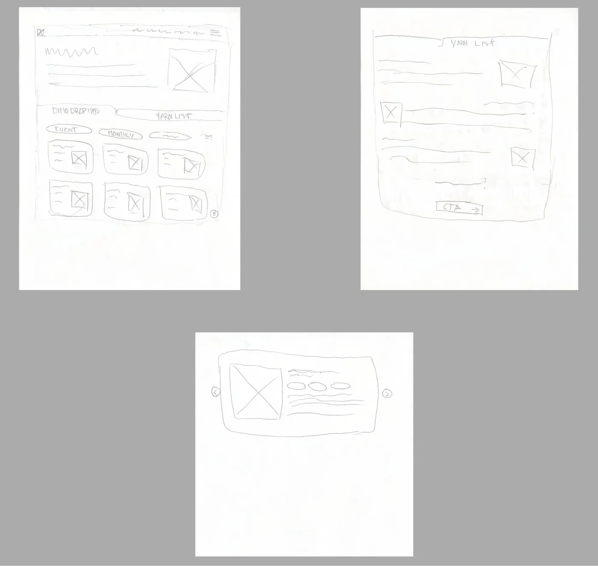
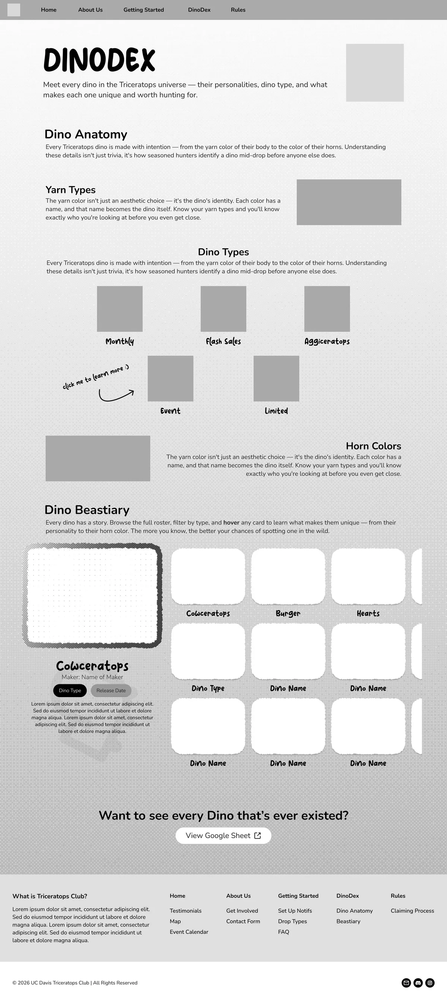
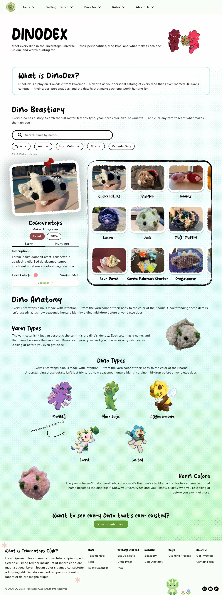
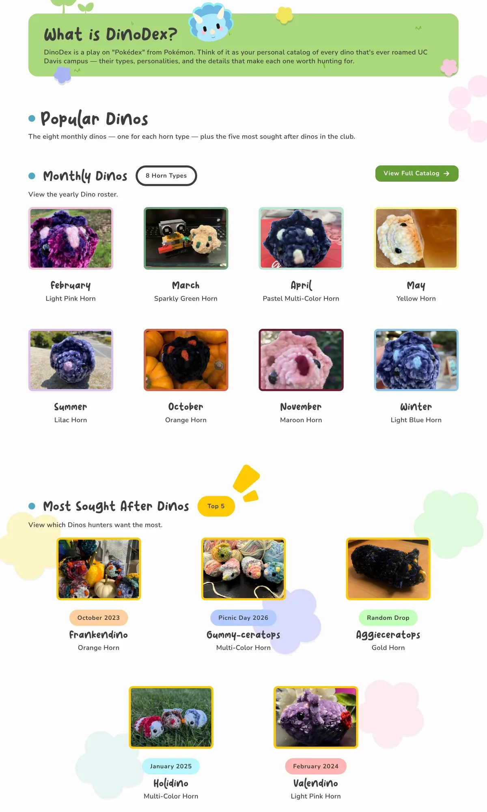
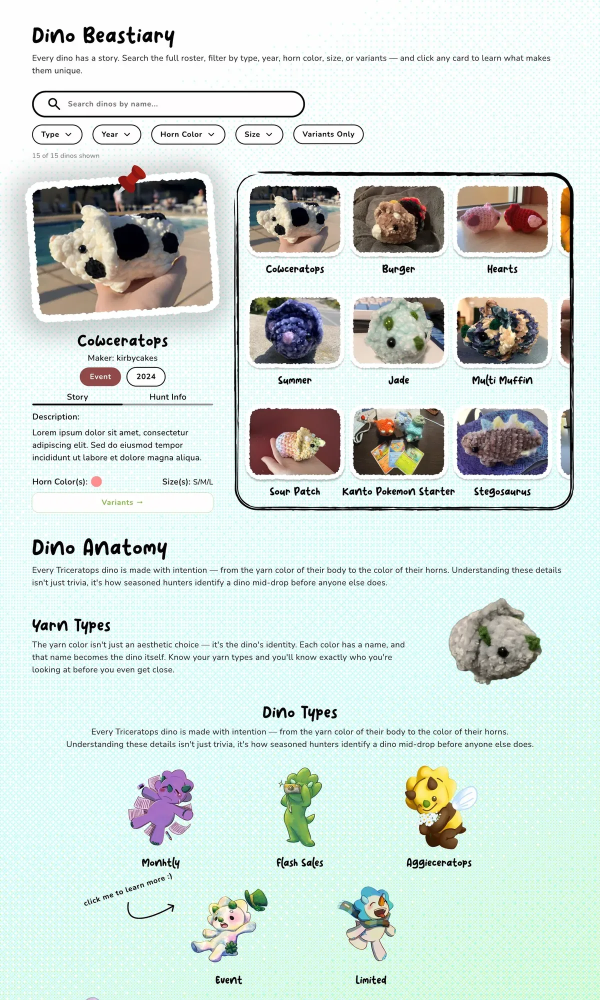

I led a team of six to give a Discord-only club its first website
Club
Triceratops is a UC Davis club that hides handmade crochet dinos around campus. Staff “drop” them, and students “hunt” for them and collect them.
Problem
The club had no website. Instagram got people curious, but the rules and drop alerts lived in a confusing Discord, so many never made it in.
Impact
We launched at the Involvement Fair: 790 site visits and 47 new Discord members in launch week.
Endorsement
“I think the website is really helpful and useful as a guiding tool for hunters new to Davis Triceratops, showcasing the information in a quick and concise way to make it easy for newbies to understand.”
— Vivian, Social Media Team LeadInstagram got people curious, but joining meant decoding a Discord
The club’s Discord had about 5,000 members, but only 100 actively took part (about 2%). The how-to info was split across 4 channels for members. Even co-president Thanh needed help when first joining the club from the other co-president, Ava:
“Without Ava, I wouldn’t have known how to navigate around the rules and how to get notifications.”
Thanh, co-president

ZoomOur clients, the club’s co-presidents Thanh and Ava, wanted a site for new students (UC Davis students new to the club) that would:
- Get them to join the Discord and Instagram, where the club actually runs.
- Explain how the club works, with the Rules and DinoDex pages as must-haves.
- Feel friendly and handmade, not corporate, and stay easy for the board to update after we hand it off.
To understand why new students stay out, we surveyed and interviewed them
The client’s main audience, new students, turned out to be three different groups. I set up the cohorts, a screener survey, and interview scripts, and the whole team ran them: 62 survey responses, 15 interviews (I ran 4), and a competitive SWOT analysis of 10 similar sites.
“Is this club worth my time?”
Interested Observer
Has seen a drop, never joined
Primary“What is Triceratops?”
Unaware Candidate
Never heard of the club
Primary“I wish I could find information easier.”
Active Participant
Already in the Discord
Secondary

Here is what we found:
“I followed the Instagram but I didn’t know you had to go on the Discord to find info on the drops.”
Survey, Active Participant
The site’s job isn’t discovery, since Instagram already does that. Its job is clarity: explain the rules, show it’s low-commitment, and hand people to the Discord.
My team ranged from people who had never coded to people with two years of client work
So I set the project up like a real client job and made sure everyone could keep up:
Set it up like a client job
A signed contract, team agreements, 1-on-1s about goals and worries, and a Notion hub for timelines, scripts, and notes.
Walked through each research step
In weekly meetings, from writing research questions to interviewing and SWOT.
Got everyone ready to build
I introduced HTML, CSS, and JS, helped set up VS Code and GitHub, and assigned Odin Project homework so designers could build with AI.
Built the shared code template
With Claude Code and Figma MCP, so every page started from the same nav, footer, and styles.
Brought in 4 outside reviewers
Including a product designer at SalesHood. I combined their audits with client feedback into one priority list.
Coordinated a graphics team
They made 24 custom illustrations for the site.
Took over QA myself
When fall classes slowed the team down, so we’d still hit launch.
People lit up talking about their own dinos, so I turned a list into a collection
The DinoDex was my page, where members look up the club’s dinos and information related to their type and color. It started as “Yarn Types,” a plain list. In interviews, members talked about their dinos like pets, so I renamed it after the Pokédex and made it feel like a collection. The client approved.
Reviewers said the page was too crowded, so I simplified it
In Hi-Fi V1, our outside reviewers said the top of the DinoDex was too crowded, with a title, intro, search bar, and filters all at once. They also found the Dino Types popup awkward. So the final shows dino types as static cards, and the search and filters went too (see Tradeoffs).
Lo-fi
Paper sketches with tabs, filter pills, and a card grid, to explore how to group dinos.

Mid-fi
Dino info on top, cards below, and the spreadsheet link at the bottom.

Hi-Fi V1
Cards moved to the top, with search and 5 filters. Reviewers found it too crowded.

Final
Curated popular dinos and simple, static type cards. Search and filters are gone so the club can keep it updated.

The club will run this site without us, so I designed for the people who keep it running
After handoff, the club updates the site on its own. That shaped my biggest decisions more than any visual feedback did.
I cut search and filters so the club could keep the page up to date
Thanh and Ava realized the club adds new dinos all the time, and a full catalog meant hand-coding a card for every one. So I swapped it for a starter set: the 8 monthly dinos plus the top 5 most sought-after, with a “View Full Catalog” button to the spreadsheet they already update. Less flashy, but easy to keep current.


- Folded “Find a Drop” into Home. The client said no to its drop schedule so drops could stay spontaneous, which left just the drop heatmap. I moved it to Home, and the client agreed.
- Dropped “dropper” descriptions. I’d pitched describing each drop and its dropper (the staff member who hides the dinos). The client said no: hunters had followed droppers to see where dinos were hidden, so naming them was a safety risk.
Everything a hunter needs, on one page that works on a phone
The final DinoDex gives hunters one place to learn every dino: the 8 monthly dinos and the 5 most sought-after, what makes each type and horn color unique, and a link to the full catalog. The other designers also used my layout as their reference for mobile.
- Popular Dinos show the recurring monthly dinos and the most sought-after dinos dropped throughout events in the club’s history.
- Horn Colors and Yarn Types explain what makes each dino unique: the horn color marks the month or event it was made for, and special dinos use one-of-a-kind yarn combinations.
- Dino Types explain how each dino is obtained (Monthly, Flash Sale, Event, Aggieceratops, or Limited), so hunters know what to look out for.
We launched on the hard deadline, and the site became the club’s top Discord invite
See it liveThe site went live on Oct 13 at the UC Davis Involvement Fair. The fair brought in plenty of members on its own, and so did the website: it became the club’s #1 Discord invite link, with 47 joins traced straight to it.
“We had 300 people come by, and a good half of them scanned the website QR code.”
Thanh, co-president, on fair day (his estimate)
Members said it fixed what we found in research
After launch, Thanh collected feedback from members. Their words echo the problems we started with: too many Discord channels, confusing setup for newcomers, and wanting the club to feel welcoming.
“I was a little overwhelmed at first with all the channels in the club’s Discord server, but the website really helped lay out the chronological steps on how to participate.”
“As someone who is new to Discord entirely… this website helped me understand how the club worked without having to ask for more help from my peers.”
“The website makes the club… feel even more official. It really does capture the friendly and welcoming vibes of the club.”
“The heatmap… helps me as a dropper identify less frequent areas to hopefully focus on hiding dinos in new locations.”
What I’d do differently
- Ask “who keeps this running?” from day one. My biggest cuts came from upkeep and safety, and they showed up late, at hi-fi. Next time I’d ask earlier.
- Design for phones sooner. Hunters use the site mid-hunt, but we didn’t start mobile designs until week 12.
- Test the live site. I’d like to watch a few new students use the real site.
Thank you to Triceratops and its co-presidents, Thanh Nguyen and Ava Meade; to my teammates Anqi Su, Nathan Salas, Leif Caratiquit, Lyanna Nguyen, and Lisa Wang; and to the volunteer graphics team.